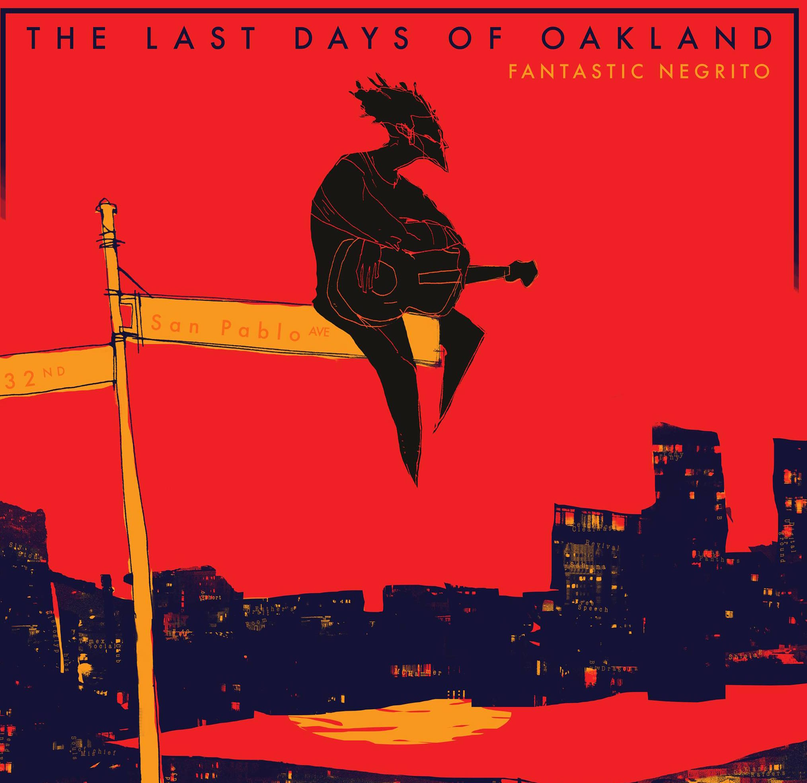

Smith Freeman
Articles
Portland Rap on The Rise: 8 Artists To Get You Started.
The Portland hip-hop scene has historically been small and not well publicisized. This is largely due to the Oregon's legalized racist history which simultaneously marginilizes black communities and creates an image of tolerance in the American imagination of Portland. However, Portland rap is very much on the rise and detailing the artists working in the city is crucial.
Click to read.
10 Leading Rappers who Happen to Be Women
"The phrase 'we’re just really starved for rappers who are women' is not a reflection of a dearth of women in rap (although there could always be more); rather, it is a result of mainstream entertainment media’s inability to recognize and promote groups that have historically not been recognized for their economic and creative ownership".
Click to read.
Album Reviews
Princess Nokia's 1992: Power in Childhood
"The opening track of Princess Nokia’s nine-track album, 1992, is aptly titled Bart Simpson and makes clear that childhood is powerful and identity-forming."
Click to read.
Brent Faiyaz’s A.M. Paradox: Women as Muse
"The beat then opens up into what sounds like a mixture of a woody instrument, African hand percussion, and (guessing wildly) a lap steel guitar. The bass itself is synthesized, but with a small buzz that gives it the sound of a bass African marimba that combines nicely with the high metallic sound of the rasp."
Click to read.
Siri's GAWDBAWDY: Human in The Cosmos
"...its setting is surrealistic and cosmic, but its emotion is real and earthly. So too is GAWDBAWDY, with Siri’s deep and feminine voice over drum brushes, hi-hat, and chimes. The EP is a cosmic experience for sure. The cover, with Oakland’s Lake Merritt, looks lunar. And the title, GAWDBAWDY, alludes to celestial bodies of the divine."
Click to read.
Interviews
Awon on The Old-School, Vinyl, and Politics
“You got this whole wave of people who hate trap, but Gucci came home and dropped two fucking albums. Like two albums! Two albums! You know how hard it is to make one album? And he drops two with videos and shit. He outworks people.”
Click to read.

Nick Francis on "The Last Days of Oakland" and Album Artwork in The Digital Age
"Fantastic Negrito is an old school cat. There was one day we were talking and he sat me down and was like “Look, it’s more complicated than that. There are old people that have been here forever, there are new people coming in [to Oakland], but that doesn’t have to be the end of the story."
Click to read.
I’m from Oregon, Of Course This Shit Is Organic: Mat Randol
"We’d kick it in my grandma’s house, this is terrible, just fucking smoking blunts and making music…and playing video games. It was a cool way to pay homage to what we would do, you know. The creative process of all our earlier music happened at that house."
Click to read.